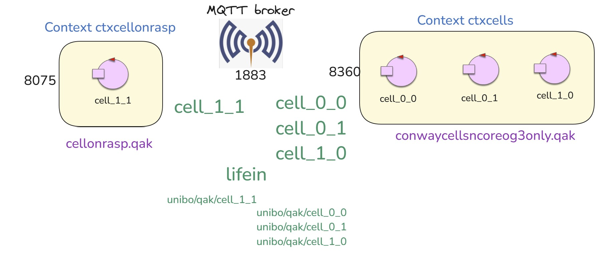

RaspberryCode2025¶
rasp2025¶
rasp2025ledalone¶
Un actor che gestisce i Dispatch
|
Installazioni 2025¶
Installazione Java 17 con OS=bookworm
sudo apt update sudo apt full-upgrade sudo apt install temurin-17-jre //no jadk
Controllo apertura porta
1883su Windows
{kind=link}
Guardare in properites
netstat -ano | findstr :1883
sudo nano /etc/dhcpcd.conf static domain_name_servers=8.8.8.8 8.8.4.4 sudo systemctl restart dhcpcd
gradlew disZip unzip su Raspberry copia di python in bin esecuzione in bin di ./rasp2025
sudo nano rasp2025.pl //modifico il sistema su Raspberry
cellOnRasp¶
Attore che realizza la cella di nome L’actor |
|
Sottosistema che crea dinamicamente su PC le celle |
|
Object Kotlin che definisce funzioni di utilità, tra cui
|
|
Programma Java che invia comandi GUI-like via MQTT sulla topic |
cellOnRasp system Architecture¶
{kind=link}
cellOnRasp Punti salienti¶
In entrambi i sotto-sistemi conwaycellsncoreog3only.qak e cellonrasp.qak:
mqttBroker “192.168.x.y” : 1883 eventTopic “lifein” |
Dichiarazione che induce la Qak infrastructure a creare una connessione MQTT con il broker. Inoltre, ogni attore:
|
kernel_rawmsg : kernel_rawmsg(ARG) |
L’evento kernel_rawmsg viene emesso dalla Qak infrastructure quando il metodo di callback MQTT messageArrived riceve una stringa che non corrisponde a un oggetto di tipo IApplMessage. Il componente che percepisce questo evento può convertire la
stringa
|
event alarm : alarm(X) |
Evento di test per verificare la propagazione degli eventi via MQTT. |
In conwaycellsncoreog3only.qak:
Context ctxcellonrasp ip [host=”…” port=8075] |
Dichiarazione necessaria solo se si voglioni propagare eventi su un attore del sistema che non usa MQTT. |
ExternalQActor cell_1_1 context ctxcellonrasp |
Dichiarazione necessaria solo se si vuole inviare informazione in modo esplicito alla cella
di nome |